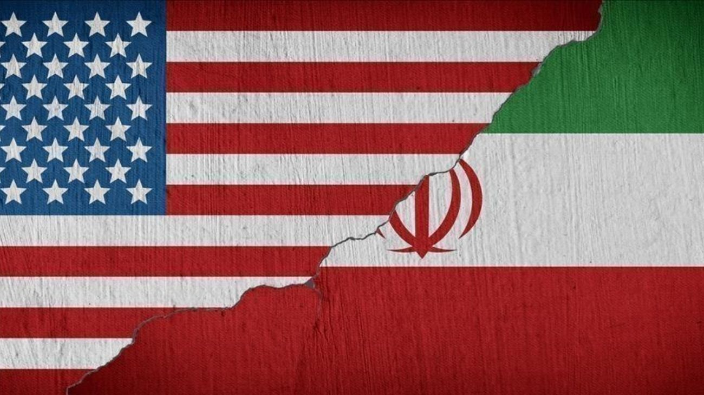

EEUU e Irán acordaron un alto el fuego de dos semanas: cómo reaccionaron los mercados
Estados Unidos e Irán anunciaron un alto el fuego de dos semanas, poniendo una pausa a uno de los conflictos más tensos de los últimos meses.

El mundo respiró aliviado este miércoles. Estados Unidos e Irán anunciaron un acuerdo de alto el fuego por dos semanas, poniendo una pausa a un enfrentamiento que había sacudido al planeta desde el cierre del Estrecho de Ormuz semanas atrás y que había disparado el precio del petróleo, generado pánico en los mercados financieros y obligado a aerolíneas de todo el mundo a suspender vuelos sobre Medio Oriente. El acuerdo, aunque transitorio, fue suficiente para desencadenar una reacción inmediata y contundente en los mercados globales, que venían acumulando tensión desde el inicio del conflicto y que interpretaron la tregua como una señal de que lo peor del choque bélico podría estar quedando atrás.
La reacción de los mercados fue casi instantánea y en todos los frentes. Las bolsas asiáticas lideraron la euforia con subas de hasta un 5%, seguidas por las europeas que avanzaron un 4,6%. Los futuros de Wall Street, que anticipan cómo abrirá la bolsa estadounidense, subían hasta un 3,6% al momento de conocerse la noticia. El movimiento más llamativo, sin embargo, fue el del petróleo: el barril de crudo se derrumbó un 14% en pocas horas, borrando de un plumazo gran parte de la suba que había acumulado desde el cierre del Estrecho de Ormuz. Para entender la magnitud de ese movimiento, hay que recordar que cuando Irán bloqueó el estrecho, el petróleo había llegado a los US$80 el barril con proyecciones de alcanzar los US$100. Ahora, con la tregua anunciada, los mercados descuentan que el suministro global de crudo volverá a normalizarse.
El oro, en cambio, tuvo un comportamiento diferente. El metal precioso volvió a superar los US$4.800 por onza, lo que puede parecer contradictorio en un momento de alivio geopolítico, pero responde a una lógica propia: el oro no solo sube cuando hay miedo, sino también cuando los inversores anticipan que los bancos centrales mantendrán tasas bajas o cuando la incertidumbre de largo plazo sigue presente. El dólar, por su parte, retrocedió frente a las principales monedas del mundo, con el euro acercándose a US$1,17, su nivel más alto en meses. Un dólar más débil suele ser una buena noticia para los países emergentes, incluida Argentina, ya que abarata el financiamiento externo y mejora la competitividad de las exportaciones.
Para Argentina, el impacto de este alto el fuego tiene varias lecturas. Por un lado, la caída del petróleo es una señal de alivio para los precios de los combustibles, que habían empezado a mostrar presión al alza tras el cierre del Estrecho de Ormuz. Por otro, la recuperación de las bolsas globales suele favorecer el apetito por activos de mercados emergentes, lo que podría traducirse en mayor interés por bonos y acciones argentinas. El debilitamiento del dólar, además, beneficia al precio de las materias primas que Argentina exporta, como la soja y el petróleo de Vaca Muerta. Dos semanas de tregua no resuelven el conflicto de fondo entre Washington y Teherán, pero dan al mundo —y a los mercados— el oxígeno que necesitaban para recalibrar expectativas y evitar un escenario de crisis energética global prolongada.